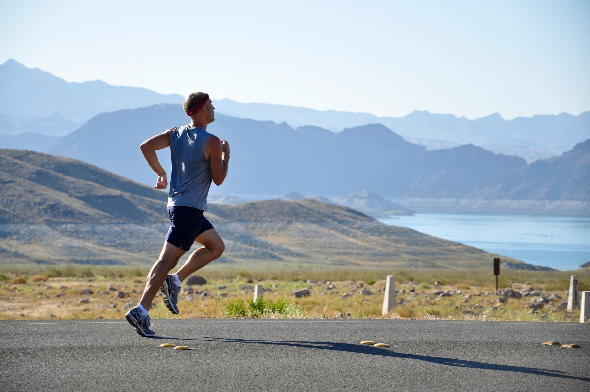

Moje najoblúbenejšie činnosti
Beh
Hoci som začal behávať len tento rok, dosť ma to chytilo. Stihol som 3 polmaratóny a pár dalších pretekov. Budúci rok by som rád odbehol celý maratón.
Futbal
Od mala som hrával futbal, teraz už len sledujem. Môj oblúbený klub je AC Milan, málokedy si nechám újsť nejaký zápas Milána. Tento rok som sa konečne dostal aj na San Siro, na zápas proti Atalante Bergamo.

Hory
Okrem behávania po rovine sa rád hýbem aj viac do kopca, v miernejšom tempe. Na Slovensku máme krásnu prírodu a hory, ktoré stoja za povšimnutie.

Sledovanie TV
Občas je dobré trochu vypnúť a sledovať TV. Najradšej sledujem seriály.